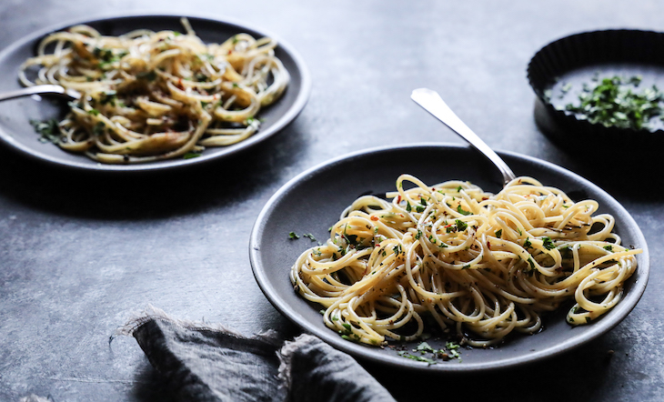

Bastardized Aglio Olio

Description
Aglio Olio has to be the greatest meal hack ever. Super easy to make and you can customise it with any extra ingredients or keep it simple and make it plain but tasty. This version probably isn't Italian sanctioned but it's how I've kept this dish foolproof for every last minute pasta dinner.
Feel free to alter this recipe however you like, the magic of this recipe is its easy customability.
Ingredients
- linguine noodles
- 6 mushrooms
- 1 bulb garlic
- chili flakes
- tomato paste (optional)
Steps
- Boil water in a big pot. Add olive oil and salt generously.
- Slice the garlic bulb and the mushrooms.
- Add olive oil to a pan until the bottom is covered. Fry the garlic in the oil.
- Once the water is boiled, throw in linguine and boil for about 7 minutes or until it's cooked to al dente.
- When the garlic has browned slightly, add in the mushrooms and stir fry with the garlic. Add salt and pepper to taste.
- Once linguine is cooked, drain the water and rinse the noodles with cold water.
- When the mushrooms are softened, add the chili flakes and add the noodles to the pan. At this point, you can add the tomato paste if you'd like.
- Liberally add italian herbs. Season with salt and pepper to taste.